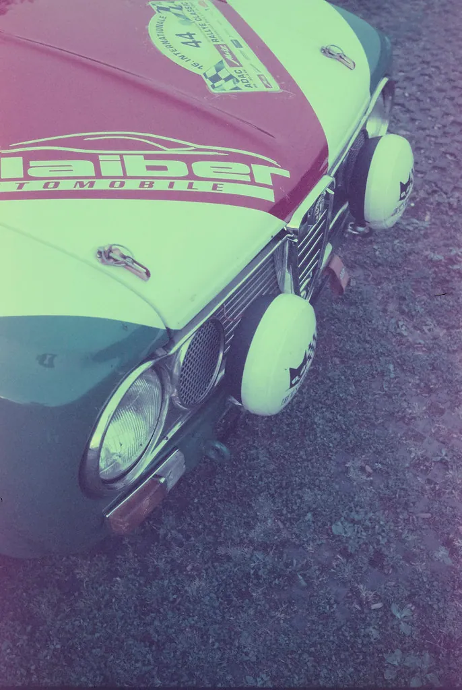

Whitewall Weekend
Pull up to the curb and stay a while. This is a magazine for everyone who loves a classic car — the gleam of chrome, the rumble of an old engine, the easy company of a Saturday car show. No selling, no snobbery, just nostalgia, history, and the joy of these beautiful machines.

A friendly place to park
Whitewall Weekend began with a simple wish: a calm, welcoming corner of the world devoted to the cars so many of us grew up loving. Not a sales lot, not a snobbish club, not a place that makes you feel you need deep pockets or a mechanic's hands to belong — just an easy, friendly magazine for the pure pleasure of these wonderful machines. Whether you owned a dozen classics or simply remember the one in your family's driveway, you are among friends here.
We take our time, we keep things plain, and we never forget that the best part of this hobby is the people and the memories, not just the metal. Nothing here is for sale, nothing is behind a sign-up, and nobody will ever make you feel your car — or your knowledge — is not good enough. So pour a cup of coffee, pull up a chair, and browse at your leisure. There is no rush at a car show, and there is none here either.
Cruise the decades
Pick your lane
Decades of Classics
A cruise through the 1930s to the 1970s — the design trends, the dream machines, and the stories that made each era unmistakable.
Car Show Guide
How to attend, how to show, and how to enjoy the good company — etiquette, judging basics, and what to bring.
Restoration Basics
Thinking of a project? Plan it wisely — budget, originality, and knowing when to turn a wrench and when to call a pro.
Automotive Trivia
Test your knowledge with our 20-plus question quiz on classic-car history and the language of the hobby.
Care & Storage
Keep your classic happy through winter and beyond — covers, batteries, fluids, and tucking it away the right way.
Why we love the old iron
There is nothing quite like a classic car. A modern automobile is a marvel of quiet efficiency, but a classic has character — a face in its grille, a voice in its exhaust, a story in every chrome curve. These were cars designed to be looked at and loved, in an age when a new model was front-page news and the family car was a source of real pride. To own one, or simply to admire one at a show, is to keep a little of that optimism alive.
For many of us, the love goes deeper still. A particular car is the one your father drove, the one you courted your sweetheart in, the one that carried the family on every summer vacation. A classic is a time machine as much as an automobile, and turning the key can bring back a whole decade in an instant. That is the real engine of this hobby — not horsepower, but memory and joy.
What you'll find here
Whitewall Weekend is organized to be easy to wander. Our Decades of Classics traces the cars era by era, from the elegant 1930s to the bold 1970s, and teaches you to place any car in its time. The Car Show Guide helps you enjoy the gatherings that are the beating heart of the hobby, whether you are admiring from the fence or showing a pride and joy of your own. The Restoration Basics guide helps you plan a project with clear eyes and a sound budget, and always with safety first.
For a bit of fun, our Automotive Trivia quiz tests your knowledge and teaches the hobby's friendly vocabulary, and the Care & Storage guide keeps your classic healthy through every season. Read in any order you please; there is no wrong place to begin and no end of things to enjoy.
More than metal
Ask any classic-car lover why they do it, and sooner or later the talk turns from horsepower to memory. These cars are woven into the story of American life — the first car a family ever owned, the convertible that meant freedom to a teenager, the station wagon that carried everyone to the lake every summer. To stand beside one of these machines is to stand beside a whole era of ordinary life, and that is a powerful and tender thing.
That is why a car show is so often a place of stories. Lean against the fence beside a stranger admiring the same car, and before long you are both swapping tales of the ones your families owned, the roads you drove, the people now gone who once sat in seats just like those. The cars are the excuse; the memories and the company are the real reward. Whitewall Weekend exists to celebrate all of it — the chrome and the stories alike.
A hobby for everyone
You do not need a garage full of tools, a fat wallet, or a prize-winning show car to belong here. Some of us tinker; many of us just admire. Some own a gleaming restoration; others are perfectly happy with a folding chair at the local cruise-in, a cup of coffee, and an afternoon of looking and remembering. Every one of those is a full member of this club, and all are welcome at Whitewall Weekend.
Whitewall Weekend is an independent classic-car enthusiast magazine. Everything here is free to read, we sell nothing, and we are not tied to any manufacturer or dealer — when we name a make or model, it is only to celebrate and describe it. The type is large and grows larger at a tap, the photographs are real, and the spirit is friendly. So settle in, pick a decade or a topic, and enjoy the drive at your own easy pace. The open road of the Decades of Classics is a fine place to start, and there is no wrong turn to be taken anywhere on this site.